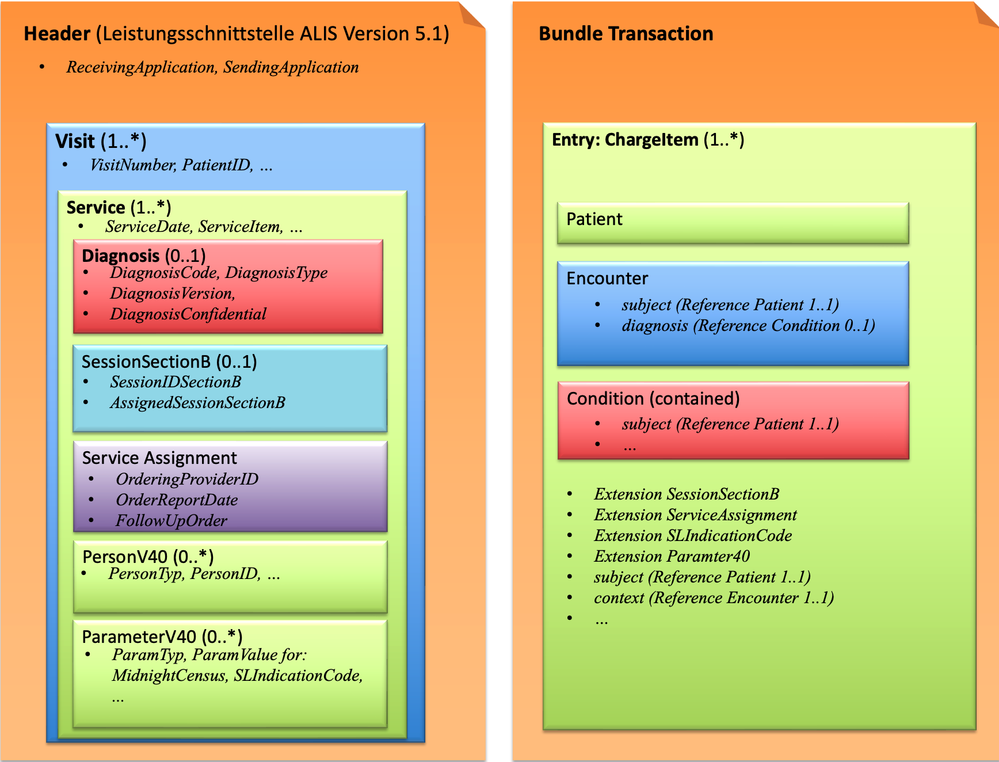

CH ALIS Connect (R4)
1.0.0-ballot - ballot

CH ALIS Connect (R4)
1.0.0-ballot - ballot

This page is part of the CH ALIS Connect (v1.0.0-ballot: DSTU 1 Ballot 1) based on FHIR (HL7® FHIR® Standard) R4. This is the current published version in its permanent home (it will always be available at this URL). For a full list of available versions, see the Directory of published versions
The figure on the left shows the structural design of the ALIS interface. The figure on the right shows the transformed message as FHIR Bundle where the corresponding ChargeItem resources are inserted. In the same colour the basic mapping between both formats is shown.

In a file based exchange 1..* Visits are documented. A single ALIS XML file carries a Header followed by one or more Visit elements; each Visit represents a patient case and contains 1..* Service elements (the accountable Leistungen), which in turn may carry nested Diagnosis, ServiceAssignment, SessionSectionB, PersonV40 and ParameterV40 information.
The ALIS XML structure is mirrored 1:1 by a set of logical models. They are listed on the Logical Models page, with Visit as the entry point.
Every Visit/Service maps to one ChargeItem, and the visit- and service-level data is distributed onto the ChargeItem together with the Patient, Encounter and Condition resources. The ChargeItem.context references the Encounter (the Visit) and ChargeItem.subject the Patient, so the Visit grouping is preserved.
The element-level correspondence between the ALIS logical models and the FHIR profiles is documented as Concept Maps (Model Maps), one per logical model. They show, side by side, each source element and the FHIR target element it maps to:
A ParameterV40 entry is generally carried in the generic ParameterV40 extension on the ChargeItem. A few ParamTyp values are instead mapped to a dedicated FHIR element or extension, as defined in the ParamTyp code system and the ParameterV40 Concept Map:
| ParamTyp | FHIR target |
|---|---|
BMI |
ChargeItem.supportingInformation (reference to a BMI Observation) |
Billable |
ChargeItem.status (billable | not-billable) |
Amount |
ChargeItem.priceOverride.value |
SLIndicationCode |
CH Core regulated-authorization indication-code extension (ChargeItem.extension:SLIndicationCode) |
The reverse view — starting from a FHIR resource and looking up the ALIS XML field each element corresponds to — is documented directly on the FHIR profiles under their Mappings tab (mapping identity alis). See:
The same alis mappings are also defined on the ALIS extensions (e.g. Form, SectionCode, ItemNumber, ServiceAssignment, SessionAnnexB, ParameterV40), each pointing back to its ALIS field.
The table below lists each ALIS XML Visit example on the left and its corresponding ChargeItem(s) on the right.
| Visit | ChargeItems |